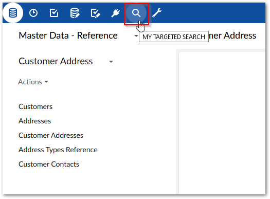
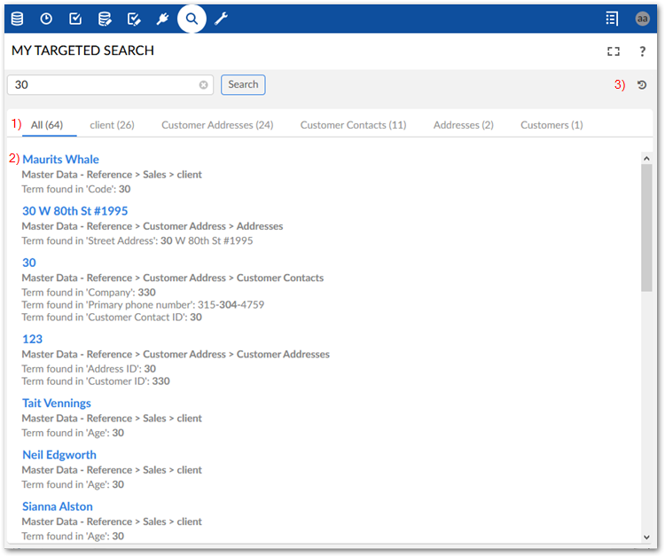
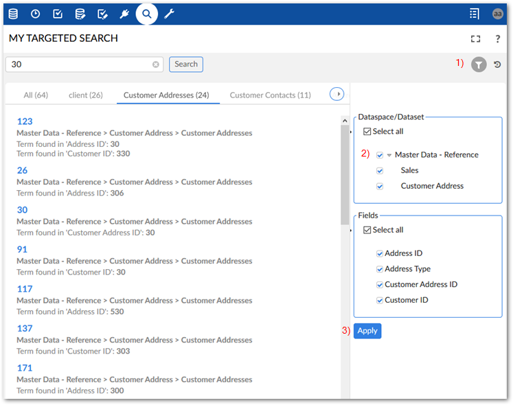
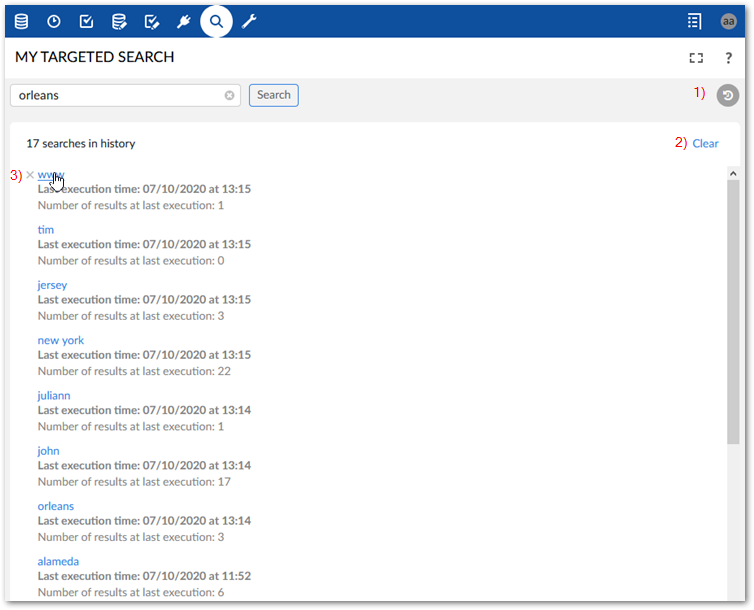

An administrator must configure the add-on before you can execute a search. As an EBX® user, the icon in the menu bar to access the add-on's targeted search does not display for you until a configuration exists. Administrators can use the instructions in Configuring search to configure the add-on.
The following sections show how to run a search and use available features:
To run a new search:
As shown in the image below, you can run a targeted search from the main EBX® menu. The data on which the add-on performs the search depends on the datasets included by your administrator.

Input your search term in the text box and select Search, or press Enter on your keyboard.
If you are searching for a date, apply the format 'DD/MM/YYYY' for French and 'MM/DD/YYYY' for other languages.
Browse the search results. The following image is of a search that returns results from multiple tables.

1) | The All tab displays the results from every table. The remaining tabs separate the results by table; each tab label indicates the table's results it contains. |
2) | Each result includes: a highlighted link to record containing the result, the dataspace > dataset > table where the result was found, and the field containing the result. |
3) | Use the icons to expand to full screen, access the help, and display your search history. |
If table data is updated after performing a search, you need to re-execute the search to synchronize the results.
When viewing results from a single table, you can filter the results by dataspace, dataset, and field. The following image highlights this functionality:

1) | Show/hide the filter. |
2) | Select the locations you want to see results from. |
3) | Select Apply to filter results. |
You can show your search history by clicking History in the top-right of the Search window. Administrators can configure options that determine how much history is kept before overwriting and can purge all history. As a user, you can re-run a search, clear all of your history, or just individual entries in the history.

1) | Show/hide your search history. |
2) | Select Clear to purge your search history. |
3) | Click the link to re-execute the search, or X to remove the entry. |